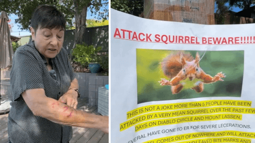

Новости дня и всякое разное uwu
Новость 1: Кирпич, украденный из церкви, оказался «проклятым» (27.09.2025 Автор: Alec Fernandes)
Недавно руководство церкви получило анонимную посылку из Сан-Хосе (Калифорния, США), в которой лежал кирпич. Некая женщина в послании сообщала, что её муж прихватил кирпич из церковного склепа по время реставрационных работ 2023 года. И с тех пор вора и его семью начала преследовать череда неудач. Вот жена и решила вернуть «проклятый» кирпич обратно.Заинтригованный и немного напуганный персонал поместил кирпич в стеклянный футляр, после чего странный «сувенир» выставили на всеобщее обозрение. Кстати, с тех пор в Олд-Норте произошло несколько необъяснимых отключений электричества. Возможно, кирпич и впрямь проклят? Многие люди назвали историю с кирпичом уроком кармы.
иногда в голову прилетают интересные вещи
Новость 2: Кот научился сбегать из плавучего дома, совершая прыжок в стиле супермена (28.09.2025 Автор: Danielle Kate Wroe)
Хозяйка Финна живёт в плавучем доме, и она поделилась фотографией, показывающей, как рядом с её домом в небе парит таинственное нечто. Но это не птица, не самолёт и не НЛО. Это Финн, который регулярно сбегает из дома в самоволки. Питомец выбирается из окна и с перил своего дома перепрыгивает на соседский плавучий дом. Ну, а уже оттуда — вниз по лестнице и на волю. Снимок с «летающим» котом и удивил, и позабавил пользователей социальных сетей, хотя некоторые забеспокоились за безопасность Финна, ведь в какой-то момент он может не рассчитать прыжок и свалиться в воду. Возможно, владелице стоило бы запирать окно, чтобы любимец не сбегал.
я обязательно выживу
Новость 3: Злобная белка повадилась нападать на людей (22.09.2025 Автор: Cornell Barnard)
На людей повадилась нападать злобная белка. И если кто-то думает, что отбиться от озверевшего грызуна довольно легко, тот должен послушать свидетельства Джоан Хеблэк и Изабель Кампой. Обе эти дамы в разное время пострадали от белки, которая появилась неизвестно откуда. Джоан зверёк вцепился в ногу, а Изабель — в руку. Оторвать от себя белку было не так-то просто, и обеим женщинам пришлось обращаться в больницу, чтобы им помогли залечить полученные раны. Специалисты полагают, что белка стала агрессивной из-за того, что её кто-то подкармливал, пока она была маленькая. Теперь животное не боится людей, да и вообще люди ассоциируются у него с получением пищи. Поняв, что больше её никто не угощает, белка вполне могла разочароваться и озлобиться.
кажется, что ее кормили не только орехами
Внимание! Все приведенные здесь новости являются выдумкой. Любые совпадения с рельностью случайны